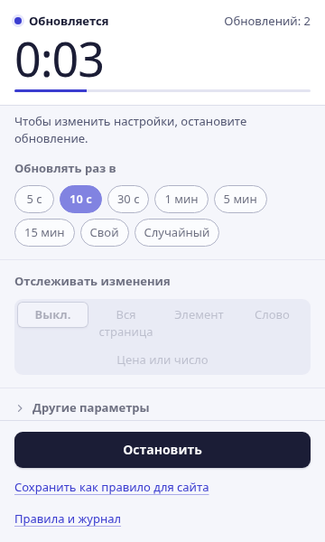
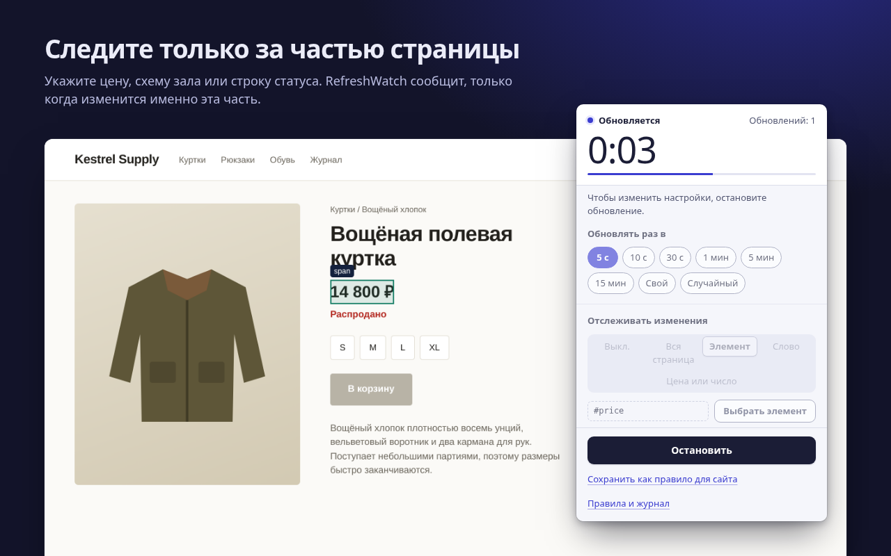
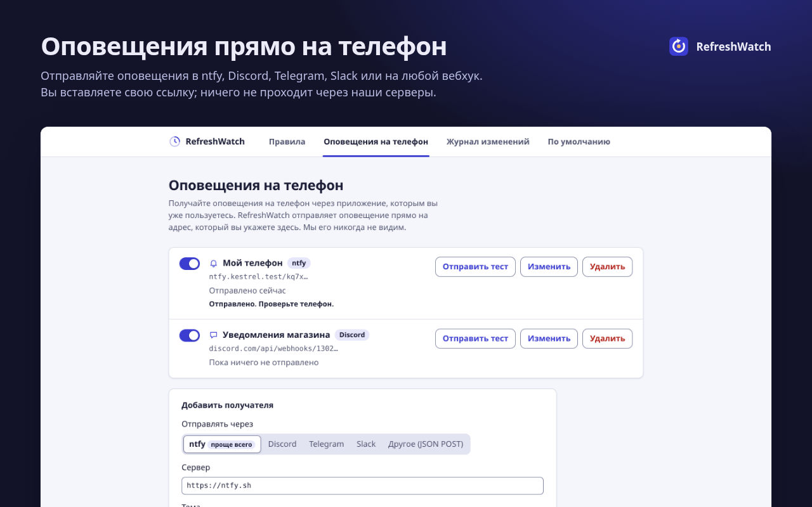
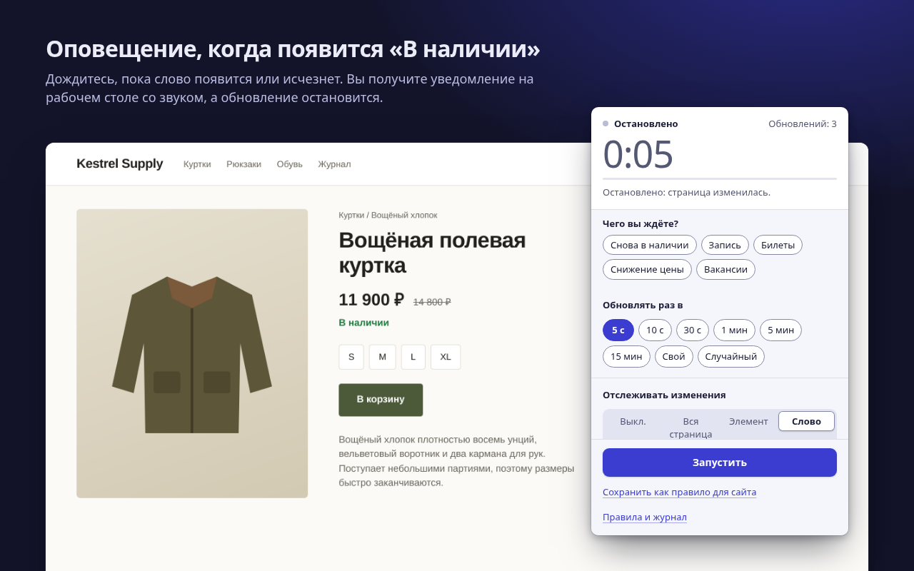

Страницу обновит. Изменение не пропустит.
RefreshWatch перезагружает любую вкладку Chrome по таймеру и сообщает в тот самый момент, когда страница меняется: новая цена, слово «В наличии», освободившееся окно для записи.
Пользуетесь Microsoft Edge? Установите из Edge Add-ons
Без аккаунта. Без наших серверов. Для Chrome 120 и новее.

Укажите, за чем следить
Для простого автообновления достаточно выбрать интервал. Добавьте отслеживание, и RefreshWatch будет сравнивать страницу после каждой перезагрузки, а при изменении сообщит уведомлением и звуком.
Вся страница
Любое изменение видимого текста. Включите «Игнорировать меняющиеся числа», чтобы часы и счётчики не вызывали ложных срабатываний.
Один элемент
Укажите цену, схему зала или строку статуса. Учитывается только эта часть, а остальная страница может меняться как угодно.
Ключевое слово
Оповещение, когда появится слово, например «В наличии», или исчезнет, например «Нет свободного времени».

Оповещения на телефон и о снижении цены
Подключите свою тему ntfy, Discord, Telegram, Slack или любой вебхук, и RefreshWatch будет отправлять оповещения прямо туда. Аккаунт у нас не нужен, и ничего не проходит через наши серверы.
Уведомление на телефон, когда меняется сайт · Оповещение о снижении цены в Chrome (на английском)

Бесплатно: то, за что другие расширения берут деньги
Каждая из этих функций хотя бы в одном популярном расширении для автообновления или отслеживания страниц доступна только на платном тарифе. В RefreshWatch это просто часть расширения: без платной версии, пробного периода и аккаунта. А некоторых платных дополнений других расширений, например макросов, оповещений по почте или SMS и облачных проверок, в RefreshWatch нет вовсе.
| Функция | Что вы получаете | RefreshWatch |
|---|---|---|
| Отслеживание части страницы | Выберите любой элемент: оповещение придёт, только когда он изменится | Бесплатно |
| Оповещения по ключевому слову | Слово или фраза появляется или исчезает | Бесплатно |
| Клик по кнопке после перезагрузки | Выберите кнопку и время ожидания | Бесплатно |
| Случайный интервал | Любое значение между двумя числами, от 1 секунды до 24 часов | Бесплатно |
| Сохранённые настройки для страниц | Правила по точному адресу, началу адреса или шаблону, которые запускаются сами | Бесплатно |
| Без ограничения числа отслеживаний | Сколько угодно вкладок и правил | Бесплатно |
| Журнал изменений | Последние 50 изменений с текстом до и после | Бесплатно |
Сравнение с платными тарифами, указанными в Chrome Web Store и на страницах с ценами разработчиков, по состоянию на 9 октября 2026 года. Сравнение с одним известным расширением — на странице об альтернативе (на английском).
Ничего не проходит через нас
RefreshWatch читает и сравнивает страницы на вашем компьютере. Собственного сервера у него нет. Единственное, что он отправляет, — это оповещение, и только получателю на телефоне, которого вы настроили сами.
- Без аккаунтаУстановите и пользуйтесь. Регистрироваться не нужно.
- Без аналитики, рекламы и слежкиНикаких сетевых запросов, кроме оповещений на телефон, которые вы настроили.
- Доступ к сайтам — по одномуДля простого автообновления доступ к сайтам не нужен. Когда вы включаете отслеживание на сайте, Chrome спрашивает разрешение только для этого сайта.
- Хранится на вашем компьютереПравила, настройки и журнал изменений остаются в Chrome на этом компьютере и удаляются вместе с расширением.
Три шага от открытой вкладки до оповещения
Выберите интервал
Нажмите на значок RefreshWatch во вкладке. Выберите от 5 с до 15 мин, своё время или случайный диапазон.
Выберите, за чем следить
Вся страница, элемент, на который вы укажете, или ключевое слово. Или ничего — для простого автообновления.
Получите оповещение
Когда изменение произойдёт, вы получите уведомление со звуком, а обновление остановится. Сохраните настройки как правило, и в следующий раз всё запустится само.

Хватит нажимать «Обновить»
Бесплатно в Chrome Web Store, на английском, арабском, немецком, испанском, французском, японском, бразильском португальском, упрощённом китайском и русском.